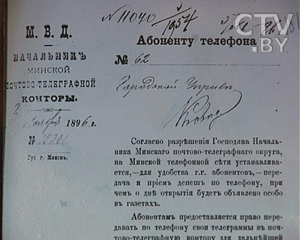
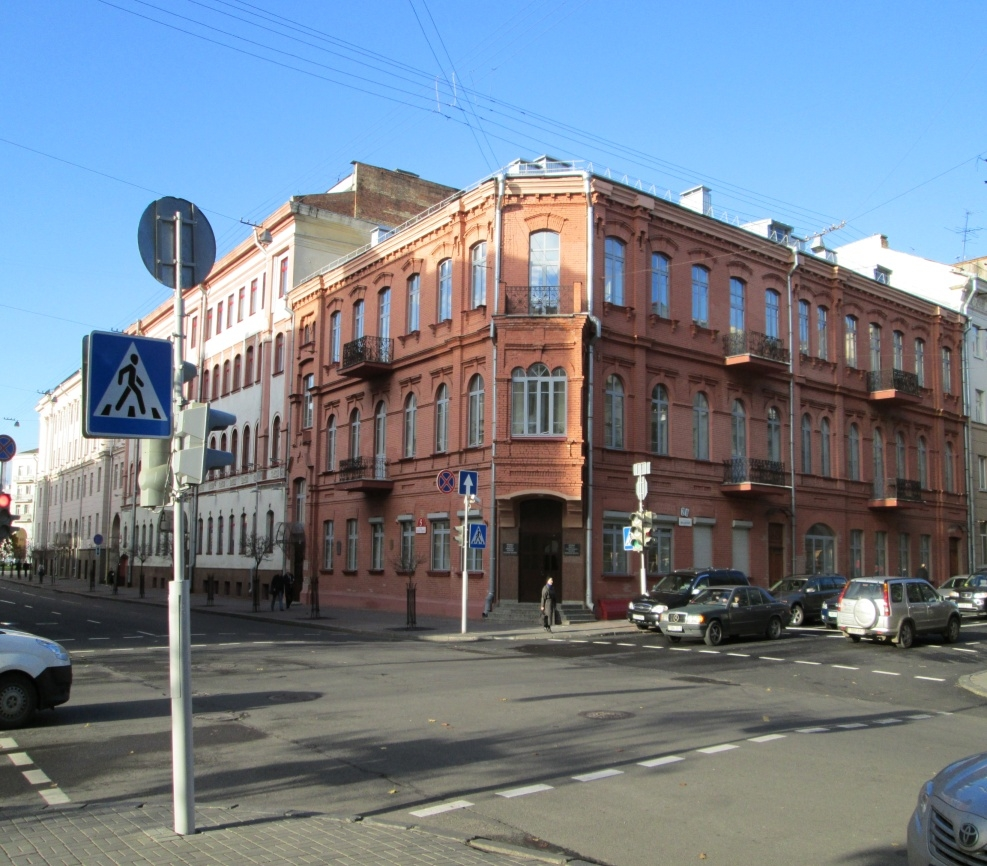

Трохпавярховы будынак на рагу Падгорнай і Серпухаўской быў узведзены ў
пачатку ХХ стагоддзя для паліцэйскага ўпраўлення і крымінальнага вышуку.
Акрамя гарадскога паліцэйскага ўпраўлення і аддзялення вышуку, тут у розныя
гады працавалі адрасны стол, павятовая земская ўправа, павятовы камітэт апякунства
народнай цвярозасці, павятовы з’езд земскіх кіраўнікоў, што з’яўляўся апеляцыйнай
інстанцыяй для валасных сялянскіх судоў і тэлефонная станцыя.З’яўленнем першых
тэлефонаў горад абавязаны, перш за ўсё, ініцыятыве
мясцовай паліцыі. 16 чэрвеня 1890 года паліцмайстар звярнуўся з просьбай да
гарадскога галавы аб устаноўцы тэлефонаў ва ўсіх паліцэйскіх частках, гарадской
паліцыі, а таксама ў яго ўласнай кватэры. Праз месяц Мінская гарадская дума на
тэрміновым паседжанні задаволіла гэтую просьбу і асігнавала на яе рэалізацыю 913
рублёў 20 капеек. Так у Мінску былі ўсталяваны першыя 8 тэлефонаў з цэнтральнай
станцыяй у гарадскім паліцэйскім упраўленні. Яны злучалі 4 паліцэйскія часткі,
кватэру губернатара, паліцмейсцера, Гарадскую ўправу і пажарны двор. У
лютым 1891 быў усталяваны хатні тэлефон губернатару, у 1893 - Мінскаму
гарадскому галаве. Па стане на 24 лістапада 1893 года ў горадзе дзейнічала 27
апаратаў.
Менавіта ў гэтым доме ў 1917 годзе размяшчалася створаная М.В. Фрунзе
народная міліцыя Мінска, якая тады налічвала звыш 200 чалавек. Зараз у гэтым
будынку знаходзіцца Прыёмная камітэта дзяржкантролю Рэспублікі Беларусь.

